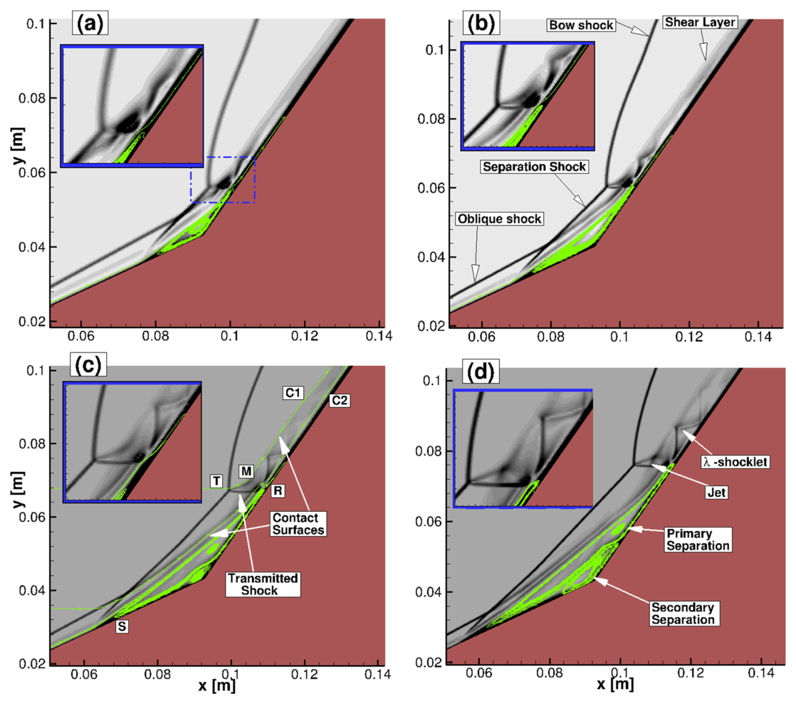
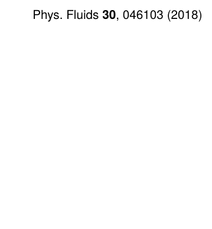
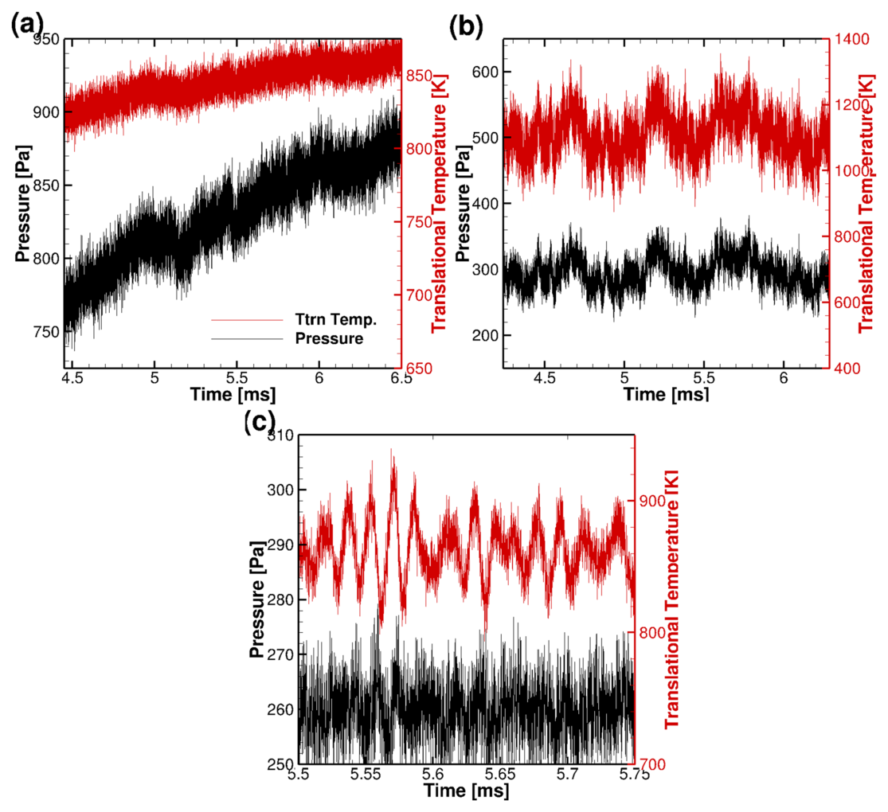
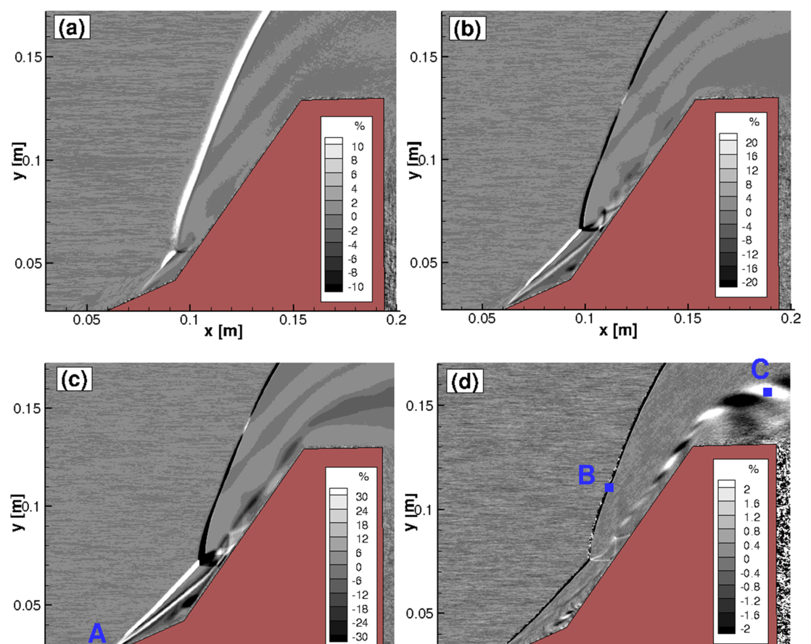

01中文摘要
采用时间精确的直接模拟Monte Carlo（DSMC）结合残差算法，研究马赫约16、单位雷诺数9.35×10⁴–3.74×10⁵ m⁻¹下双锥构型的激波主导层流分离流。弓形激波、分离激波位置、三叉点和整个层流分离区均呈时间依赖行为；分离激波角在各雷诺数下相近，但分离区结构和范围随雷诺数显著变化。雷诺数增大时，欠膨胀射流区压力升高，超声速区出现更强λ激波；第二锥面摩阻、压力和热流升高，速度滑移和温度跳跃减小；最高雷诺数下剪切层出现Kelvin-Helmholtz不稳定，使流动非定常。
原始摘要（英文/原文）
Shock-dominated hypersonic laminar flows over a double cone are investigated using time accurate direct simulation Monte Carlo combined with the residuals algorithm for unit Reynolds numbers gradually increasing from 9.35 × 104 to 3.74 × 105 m-1 at a Mach number of about 16. The main flow features, such as the strong bow-shock, location of the separation shock, the triple point, and the entire laminar separated region, show a time-dependent behavior. Although the separation shock angle is found to be similar for all Re numbers, the effects of Reynolds number on the structure and extent of the separation region are profound. As the Reynolds number is increased, larger pressure values in the under-expanded jet region due to strong shock interactions form more prominent λ-shocklets in the supersonic region between two contact surfaces. Likewise, the surface parameters, especially on the second cone surface, show a strong dependence on the Reynolds number, with skin friction, pressure, and surface heating rates increasing and velocity slip and temperature jump values decreasing for increasing Re number. A Kelvin-Helmholtz instability arising at the shear layer results in an unsteady flow for the highest Reynolds number. These findings suggest that consideration of experimental measurement times is important when it comes to determining the steady state surface parameters even for a relatively simple double cone geometry at moderately large Reynolds numbers.
02阅读说明
英文数值研究论文（Physics of Fluids 30, 046103, 2018，18页），Tumuklu、Levin、Theofilis。材料完整：bundle 893行全文、15张图注均可用；另用原 PDF 第8、10–12页核对式(3)–(11)。两处原文疑点按原文照录并标注：①表II中 X Re 的 BS 点 y=0.756 m 与其余工况量级不符，疑为 0.0756；②第13页 4X Re 段落写“the observations present for the 2X Re case also hold”，疑为 4X 笔误。2X、3X 的来流压力/单位雷诺数未逐项列出。 文章类型：期刊
03一句话核心与三句话摘要
DSMC 结合残差稳定性分析，揭示双锥高超声速分离流随雷诺数增强的非定常演化。
- 采用时间精确 DSMC 模拟 25°/55° 双锥、M∞=15.88 的化学冻结氮气流动，单位雷诺数由 9.35×10^4 增至 3.74×10^5 m^-1，共 X、2X、3X、4X 四个工况。 原文明确
- 随 Re 增大，分离区与二次涡增强、λ 激波更显著，摩阻/压力/热流升高，而速度滑移与温度跳跃降低；分离激波角则基本保持在 45°–46.4°。 原文明确
- 用 Theofilis 残差算法提取最慢衰减模态，衰减率幅值随 Re 减小，4X 工况出现剪切层 Kelvin–Helmholtz 不稳定并在 11 ms 时仍未达稳态。 原文明确
04核心内容清单
| 要点 | 类型 | 重要性 | 原文依据 | 属性 |
|---|---|---|---|---|
| 首次把时间精确 DSMC 与 Theofilis 现代全局线性稳定性（残差算法）结合，用于双锥高超声速层流分离流。 | 方法创新 | A | §1，PDF 第3页（刊页046103-2）；摘要 | 原文明确 |
| 四个工况通过提高来流静压实现：单位 Re 由 9.35×10^4 增至 3.74×10^5 m^-1，M∞、温度与几何不变。 | 工况设置 | A | §III A，PDF 第5页（刊页046103-4）；表I | 原文明确 |
| 所有工况均为 Edney IV 型激波干扰，含分离激波、三重点 T、超声速射流、接触面 C1/C2 与 λ 激波。 | 流场结构 | A | §III A，PDF 第5–6页；图1 | 原文明确 |
| 第一锥斜激波角约 28.3°，比 Taylor–Maccoll 无粘理论 27.3°大约 1°，归因于粘性。 | 定量结果 | A | PDF 第6页（刊页046103-5） | 原文明确 |
| 分离激波角对 Re 不敏感（45.27°、44.98°、46.40°、46.41°），但分离区长度由 0.028 m 显著增至 0.082 m。 | 定量结果 | A | PDF 第6页；图1、图2 | 原文明确 |
| 高 Re 下三重点下游移动、C1–C2 间距与 TMR 区压力增大，λ 激波更显著；3X、4X 出现二次涡，分离区拓扑改变。 | 流动机制 | A | PDF 第6–7页；图1(c)(d)、图3(c)、图4(b) | 原文明确 |
| 第一锥摩阻系数随 Re 的平方根下降；热流幅值与峰值随 Re 升高，峰值位置随分离区增大向下游移动。 | 表面参数 | A | §III C，PDF 第9页（刊页046103-8）；图7 | 原文明确 |
| 速度滑移与平动/转动/振动温度跳跃均随 Re 升高而减小；式(5)的简化 Maxwell 滑移在 x=0.04 m 的偏差为 17%、9.6%、3.8%（X、2X、4X），适用于 Kn<2.64×10^-5。 | 稀薄效应 | A | §III C，PDF 第10–11页（刊页046103-9–10）；式(5)，图8、图9 | 原文明确 |
| 弓形激波内速度分布函数呈双峰，向下游逐渐 Maxwell 化；前缘与分离点附近已近似 Maxwell 分布。 | 动理学证据 | B | §III B，PDF 第8–9页；图5、图6 | 原文明确 |
| 最慢衰减率幅值随 Re 减小：X 为 −3950 s^-1（前作）、3X 为 −1514 s^-1、4X 段给 −2147 s^-1（原文“2X”疑笔误）。 | 稳定性定量 | A | §IV，PDF 第13页（刊页046103-12）；式(11)，图10、图11 | 原文明确 |
| 4X 工况剪切层出现 KH 不稳定，主频约为弓形激波振荡的 20 倍；边界层内还有低频扰动。 | 非定常机制 | A | §IV，PDF 第14页（刊页046103-13）；图12 | 原文明确 |
| 4X 在 11 ms 仍未达稳态（约为 3X 计算时长的两倍），表面热流在分离区与第二锥后段仍显著随时间变化。 | 稳态判定 | A | §IV–§V，PDF 第14–16页；图13、图15(b) | 原文明确 |
05引言：研究问题与领域缺口
研究背景是高超声速层流激波/边界层干扰（SWBLI）及其引起的局部气动热载荷与转捩。双锥是 CUBRC LENS-I 等短时风洞的经典标模，其 Edney IV 型激波干扰包含分离激波、三重点、超声速射流、两道接触面 C1/C2 与 λ 激波，天然具有非定常性。作者指出现有研究的缺口：①实验测量时间有限，却缺少判断“是否达到稳态”的可靠指标；②Gaitonde 等发现 Navier–Stokes 解需约 100 个特征流动时间才收敛，短时设施难以对应；③DSMC 虽时间精确且能自然给出速度滑移，但此前从未与现代全局线性稳定性理论结合；④高 Re 下二次涡、离心/Görtler 型三维失稳如何影响稳定性尚不清楚。本文目标是：用轴对称 DSMC 给出四个 Re 工况的基准流场，用残差法分析最慢衰减模态，确定各工况达到稳态所需时间，并厘清 Re 对分离区结构、表面参数与非定常性的影响。
06流动条件与几何构型
| 项目 | 数值/描述 | 依据 | 备注 |
|---|---|---|---|
| 气体与化学模型 | 纯 N2，化学冻结，不考虑 N2 解离 | §III A，PDF 第5页 | 滞止焓 2.2 MJ/kg 足够低 |
| 来流马赫数 M∞ | 15.88 | §III A，PDF 第5页 | |
| 来流平动/转动温度 | Ttrn=Trot=42.6 K | §III A，PDF 第5页 | |
| 来流振动温度 | Tvib=1986 K | §III A，PDF 第5页 | 反射激波风洞的典型非平衡来流 |
| 来流速度 | U∞=2073 m/s | §III A，PDF 第5页 | |
| 滞止焓 | h0=2.2 MJ/kg | §III A，PDF 第5页 | |
| 壁面条件 | 等温壁 297.2 K，Maxwell 模型，动量与能量全适应（σ=1） | §II，PDF 第4页；§III A | |
| 几何 | 25°/55° 尖前缘双锥，轴对称 | §I，PDF 第3页；§III | |
| 计算域 | x=[−0.05, 0.20] m，y=[0.0, 0.25] m | 表I脚注，PDF 第4页 | |
| 工况数 | X、2X、3X、4X 四个雷诺数工况 | §III A，PDF 第5页；表I | |
| 来流静压 | X Re：2.2 Pa；4X Re：8.8 Pa；2X、3X 未逐项列出 | §III A，PDF 第5页 | |
| 单位雷诺数 | X Re：9.35×10^4 m^-1；4X Re：3.74×10^5 m^-1；2X、3X 未逐项列出 | 摘要；§III A，PDF 第5页 | |
| DSMC 网格准则 | λ/dx>2；MCT/dt>1；每个碰撞网格至少 5–6 个粒子；表II给出关键点的实际值 | §II，PDF 第4页；表II，PDF 第5页 | |
| 采样方式 | 关键点每时间步采样；场量用指示时刻前后各 500 个时间步样本平均 | §II，PDF 第4页 | |
| 稳定性扰动假设 | 二维基本流、轴对称扰动（m=0）、小扰动 ε≪1 | §IV，PDF 第11–12页；式(9)–(11) | |
| 低 Re 参考稳定时间 | X 工况在 2.4 ms 取样；3X 约 5.31 ms；4X 到 11 ms | 图5、图10、图13；§IV |
07核心现象与关键参数
| 参数 | 定义 | 数值 | 关系/说明 | 依据 |
|---|---|---|---|---|
| 单位雷诺数 Re/m（四工况） | 以来流密度、速度与粘性计算的单位长度雷诺数 | X 9.35×10^4；4X 3.74×10^5 m^-1；2X、3X 未逐项列出 | 通过提高来流静压实现，几何与来流温度不变 | 摘要；§III A，PDF 第5页 |
| 来流静压（四工况） | 自由来流静压 | X 2.2 Pa；4X 8.8 Pa；2X、3X 未逐项列出 | 与 Re 近似线性对应 | §III A，PDF 第5页 |
| 模拟粒子数（四工况） | 计算域内模拟分子总数 | X 10.94×10^9；2X 3.63×10^9；3X 4.14×10^9；4X 2.74×10^9 | X 工况比 Moss–Bird 约 16×10^6 提高约 700 倍以保证统计量 | 表I，PDF 第4页 |
| 时间步数（四工况） | 总时间步 | X 125 000；2X 400 000；3X 880 000；4X 2 000 000 | 高 Re 需更多步以覆盖更长的物理时间 | 表I，PDF 第4页 |
| 时间步长 dt（四工况） | DSMC 时间步 | X 2.0×10^-8 s；2X 8.0×10^-9 s；3X 6.0×10^-9 s；4X 5.0×10^-9 s | 满足 MCT/dt>1 | 表I，PDF 第4页 |
| 碰撞网格总数（四工况） | 两级笛卡尔网格中的碰撞网格数 | X 4.51×10^8；2X 4.70×10^8；3X 5.270×10^8；4X 3.70×10^8 | 由局部密度梯度自适应细分 | 表I，PDF 第4页 |
| FNUM（四工况） | 一个模拟粒子代表的真实分子数 | X 2.5×10^7；2X 1.5×10^8；3X 2.0×10^8；4X 4.0×10^8 | 与粒子总数、密度水平匹配 | 表I，PDF 第4页 |
| CPU 小时（四工况） | ERDC Topaz 上的总计算时间 | X 91 995；2X 115 200；3X 352 000；4X 544 000 CPU hours | 960 核，并行效率约 54% | 表I，PDF 第4页 |
| 斜激波角 | 第一锥前缘斜激波与 x 轴夹角 | DSMC 拟合线 A–B 约 28.3°；Taylor–Maccoll 理论 27.3° | 差值约 1°，作者归因于粘性 | PDF 第6页（刊页046103-5） |
| 分离激波角（四工况） | 分离激波与平行 x 轴直线的夹角（图中 C–D 线） | X 45.27°；2X 44.98°；3X 46.40°；4X 46.41° | 随 Re 变化不显著 | PDF 第6页 |
| 分离区长度（四工况） | 分离点与再附点之间的距离 | X 0.028 m；2X 0.045 m；3X 0.059 m；4X 0.082 m | 随 Re 单调增大 | PDF 第6页；表II |
| 分离点/再附点坐标（四工况） | 表II给出的 SP、RP 坐标（m） | X SP(0.079,0.037)、RP(0.101,0.055)；2X (0.071,0.033)/(0.105,0.062)；3X (0.064,0.03)/(0.109,0.068)；4X (0.057,0.027)/(0.118,0.081) | 用于计算分离区长度与探针位置 | 表II，PDF 第5页 |
| 最慢模态衰减率 σ（各工况） | 对探针宏观量时间序列作指数拟合得到的衰减率 | X −3950 s^-1（引自前作40）；3X −1514 s^-1；4X 段 −2147 s^-1（原文写“2X Re case”，疑笔误）；2X 未给出 | |σ| 随 Re 减小，所需稳态时间增大 | §IV，PDF 第13页；式(11) |
| 速度滑移公式偏差（三工况） | 式(5)计算的 V_Md 与 DSMC 结果在 x=0.04 m 的相对差 | X 17%；2X 9.6%；4X 3.8%；3X 未列出 | 偏差随 Re 升高而减小；式(5)适用于 Kn<2.64×10^-5 | §III C，PDF 第10–11页；图8(a) |
| KH 主频与弓形激波振荡频率之比 | 剪切层 KH 不稳定主频 / 弓形激波振荡主频 | 约 20 倍 | 仅在最高 Re（4X）工况观察到 | §IV，PDF 第14页；图12(b)(c) |
| 振动特征温度与分子质量 | N2 的振动特征温度 θv 与分子质量 m | θv=3371 K；m=4.65×10^-26 kg | 用于式(4)与式(6)–(8)的能量换算 | PDF 第8、11页 |
08方法与数据
采用 Bird 的 DSMC 方法，求解器为 SMILE，轴对称。碰撞用变硬球（VHS）模型，σT=σref(Tref/T)^α，N2 取 Tref=273 K、α=0.24、d=4.17×10^-10 m；转动-平动与振动-平动能量交换用 Larsen–Borgnakke 模型，V-T 松弛率用 Millikan–White 公式、R-T 松弛率用 Parker 公式并加 DSMC 修正；气-壁作用用 Maxwell 模型、动量与能量全适应，壁温 297.2 K。采用两级笛卡尔网格，保证 λ/dx>2、MCT/dt>1、每个碰撞网格至少 5–6 个粒子；四工况参数见表I。为捕捉非定常演化，作者改造采样：在选定关键点每个时间步采样，并用指示时刻前后各 500 个时间步的样本做系综平均。稳定性分析采用 Theofilis 的残差算法：把宏观量写成稳态解加小扰动，二维基本流上取轴对称扰动（m=0），对探针时间序列拟合指数衰减率 σ，并比较不同流动量是否可由单一最慢模态描述。验证包括：与 Moss–Bird 的 DSMC、CUBRC 实验热流、DS2V 代码交叉对比，以及粒子数/网格/时间步的数值收敛性检查。
| 项目 | 内容 | 依据 | 备注 |
|---|---|---|---|
| 数值方法 | 轴对称 DSMC，SMILE 代码，majorant frequency scheme 处理碰撞项 | §II，PDF 第4页 | |
| 碰撞模型 | 变硬球（VHS），σT=σref(Tref/T)^α；N2 取 Tref=273 K、α=0.24、d=4.17×10^-10 m | 式(2)，PDF 第4页 | |
| 内能松弛 | Larsen–Borgnakke 模型；V-T 用 Millikan–White 松弛率，R-T 用 Parker 松弛率并加 DSMC 修正因子 | §II，PDF 第4页 | |
| 气-壁作用 | Maxwell 模型，动量与能量全适应，壁温 297.2 K | §II，PDF 第4页 | |
| 网格与时间步准则 | 两级笛卡尔网格；λ/dx>2、MCT/dt>1、每碰撞网格 5–6 个粒子；表II给出关键点实际值 | §II，PDF 第4–5页 | |
| 非定常采样 | 关键点逐时间步采样；场量用指示时刻前后各 500 步样本平均，以兼顾降噪与捕捉非定常 | §II，PDF 第4页 | |
| 稳定性分析 | Theofilis 残差算法：q=q̄+εq̂，二维基本流上取 m=0 轴对称扰动；对探针时间序列拟合指数衰减率 σ | 式(9)–(11)，PDF 第11–12页 | |
| 工况扫描 | 保持几何、M∞、Ttrn、Trot、Tvib、U∞ 不变，仅提高来流静压使单位 Re 由 9.35×10^4 增至 3.74×10^5 m^-1 | §III A，PDF 第5页 | |
| 验证一：数值收敛 | X 工况与四倍粒子/网格、二分之一时间步的前作对比，热流一致；表II检查 λ/dx、MCT/dt、NPICC | §III C，PDF 第9页；表II | |
| 验证二：实验/代码对比 | 热流与 CUBRC 实验、Moss–Bird DSMC 对比；SMILE 与 DS2V 结果一致；速度分布与 Maxwell 拟合对比 | §III B–C，PDF 第8–11页；图6–图9 | |
| 计算资源 | ERDC Topaz，960 核，并行效率约 54%；四工况 CPU 小时见表I | 表I，PDF 第4页 |
09核心推导与公式
以 Boltzmann 方程为起点，用 DSMC 的随机碰撞过程逼近其碰撞项，从而在连续/近连续区自然获得速度滑移与温度跳跃；再把接近收敛的 DSMC 宏观量视为稳态解叠加小扰动，用线性稳定性分解把扰动写成模态形式，在轴对称假设下化为实指数衰减，通过拟合探针时间序列提取最慢衰减率。
关键假设
- 大部分流场处于连续介质区，DSMC 数值准则（λ/dx>2、MCT/dt>1、每网格 5–6 粒子）得到满足
- N2 化学冻结，无解离与电离；转动/振动采用各自特征温度与松弛模型
- 气-壁为 Maxwell 全适应，壁温恒定 297.2 K
- 接近收敛时扰动幅度 ε≪1，可作线性叠加
- 基本流为二维（轴对称），扰动取 m=0 的轴对称模态
- 最慢衰减模态主导长时间行为；4X 工况该假设变差
推导过程
DSMC 求解的是稀薄气体 Boltzmann 方程：分布函数沿分子轨迹的输运等于碰撞项。SMILE 用 majorant frequency scheme 抽样碰撞，因而在满足网格/时间步准则时，DSMC 的系综平均收敛到该方程的解，并自然包含速度滑移、温度跳跃与热非平衡。
分子间碰撞用变硬球模型，总碰撞截面随温度按幂律变化；对 N2 取参考温度 273 K、幂指数 0.24、碰撞直径 4.17×10^-10 m。该模型给出与温度相关的粘性与平均自由程，是后续 Kn 数与滑移估计的基础。
为从转动/振动温度计算当地比热比，作者用标准动理论：平动与转动自由度对 N2 分别取 3 与 2，振动用简谐振荡模型，其有效自由度由振动特征温度与当地振动温度给出。由此可解释高 Re 下近壁区 γ 升高（振动贡献被冻结）。
在近连续区，壁面切向速度不等于壁速，滑移量与当地分子平均自由程和切向速度法向梯度成正比；适应系数 σ 取 1 时系数为 1。作者用该式检验 DSMC 的滑移量，并给出其适用上限 Kn<2.64×10^-5。
把壁面元上入射（i）与反射（r）粒子的能量通量按法向速度倒数加权平均，减去当地宏观速度对应的动能，得到各方向的指示温度；对 n、τ、L 三个方向分别计算，即得平动温度跳跃。反射粒子的平均切向速度与内能也用同样权重得到。
设接近收敛的宏观量 q=(u,v,Ttrn,Trot,Tvib,P) 可写成稳态基本流 q̄ 与小三维扰动之和；扰动再按方位波数 m 与复频率 ω 展开为模态叠加。本文取轴对称基本流与 m=0，因此扰动退化为随时间指数变化的实模态。
在 m=0、轴对称基本流下，扰动写成 q̂_r e^{σt}；σ 为最慢衰减率。由于 DSMC 信号有统计噪声，不能像 DNS 那样对对数信号直接求导，作者改为对每个宏观量的时间序列作指数曲线拟合，取共同的最慢衰减率，并据此判断何时达到稳态。
适用边界：推导不是从 Boltzmann 方程到 Navier–Stokes 的严格渐近展开，而是“DSMC 解 + 线性稳定性模态分解”的半经验框架；m=0 轴对称假设排除了离心/Görtler 型三维失稳；式(5)是简化 Maxwell 滑移，仅在 Kn<2.64×10^-5 内被检验；式(6)–(8)用入射/反射通量加权，未显式包含适应系数与壁面粗糙度；4X 未达稳态，其 σ 的“最慢模态”解释有限；化学冻结与单一气体限制了对真实高焓流的推广。
10结果：主要发现与关键证据
①流场结构：四个工况均为 Edney IV 型；第一锥斜激波角约 28.3°（拟合线 A–B），Taylor–Maccoll 理论给 27.3°（25° 锥、γ=1.34、M=15.88），差约 1°归因于粘性。分离激波角分别为 45.27°、44.98°、46.40°、46.41°，随 Re 变化很小；但分离区长度由 0.028 m 增至 0.045、0.059、0.082 m。高 Re 下三重点下移、C1–C2 间距增大、TMR 区压力升高，λ 激波更明显；3X、4X 出现二次涡。②表面参数：第一锥摩阻系数随 Re 的平方根下降（Blasius 型）；热流幅值与峰值随 Re 升高，峰值位置随分离区增大向下游移动；第一锥分离点上游的热流与单锥一致，说明第二锥不影响该区。③滑移与温度跳跃：速度滑移、平动/转动/振动温度跳跃均随 Re 降低而减小；式(5)的简化 Maxwell 滑移在 x=0.04 m 处与 DSMC 的偏差为 17%、9.6%、3.8%（X、2X、4X），适用于 Kn<2.64×10^-5。④速度分布函数：弓形激波内呈双峰，向下游逐渐 Maxwell 化；前缘与分离点附近已近似 Maxwell 分布。⑤稳定性：X 工况沿用前作的 σ=−3950 s^-1；3X 为 −1514 s^-1；4X 段给出 −2147 s^-1（原文写作“2X Re case”，疑为笔误）。4X 出现低频边界层扰动与剪切层 KH 不稳定，KH 主频约为弓形激波振荡的 20 倍，且到 11 ms 仍未达稳态。
| 发现 | 证据 | 证据类型 | 强度 | 位置 | 属性 |
|---|---|---|---|---|---|
| 四个 Re 工况的分离激波角几乎不变（45.27°–46.41°），但分离区长度随 Re 由 0.028 m 增至 0.082 m。 | 图2的压力等值线与表II的 SP/RP 坐标；正文给出四个角度与四个长度值。 | 定量趋势 | 强 | PDF 第6页；图1、图2、表II | 原文明确 |
| 第一锥斜激波角约 28.3°，比 Taylor–Maccoll 无粘理论 27.3°大约 1°，作者归因于粘性效应。 | DSMC 拟合线 A–B 与理论值对比；两者使用同一 M∞=15.88、25° 锥、γ=1.34。 | 定量对比 | 强 | PDF 第6页 | 原文明确 |
| 随 Re 升高，三重点下游移动、C1–C2 间距与 TMR 区压力增大，λ 激波更显著；3X、4X 出现二次涡。 | 图1的四个纹影图、图3(c)与图4(b)的压力场对比；正文明确“larger distance between C1 and C2 and greater pressure ... make the λ-shocklets more distinctive”。 | 流场结构 | 强 | PDF 第6–7页；图1、图3、图4 | 原文明确 |
| 第一锥摩阻系数随 Re 的平方根下降；热流幅值与峰值随 Re 升高，峰值位置随分离区增大向下游移动。 | 图7(a)(b)的四工况曲线；作者与 Blasius 边界层标度及“边界层变薄导致更强压缩”的解释一致。 | 表面参数 | 强 | PDF 第9页；图7 | 原文明确 |
| 速度滑移与平动/转动/振动温度跳跃均随 Re 升高而减小；式(5)在 x=0.04 m 的偏差为 17%、9.6%、3.8%（X、2X、4X），适用于 Kn<2.64×10^-5。 | 图8(a)的滑移曲线、图9(a)–(c)的三种温度跳跃曲线；正文给出三个百分比与 Kn 上限。 | 稀薄效应 | 强 | PDF 第10–11页；式(5)，图8、图9 | 原文明确 |
| 弓形激波内速度分布函数呈双峰（0 与 2073 m/s），向下游逐渐 Maxwell 化；前缘与分离点附近已近似 Maxwell 分布。 | 图5(b)的四个位置 a–d 与图6(a)(b)的 Maxwell 拟合；正文指出这是经典双峰分布。 | 动理学证据 | 强 | PDF 第8–9页；图5、图6 | 原文明确 |
| 最慢模态衰减率幅值随 Re 减小：X 为 −3950 s^-1（前作）、3X 为 −1514 s^-1、4X 段为 −2147 s^-1（原文“2X”疑笔误），故高 Re 达到稳态所需时间更长。 | 图10、图11的指数拟合曲线；正文明确“the magnitude decay rate ... decreases with Reynolds number”。 | 稳定性定量 | 强 | PDF 第13页；式(11)，图10、图11 | 原文明确 |
| 4X 工况剪切层出现 KH 不稳定，主频约为弓形激波振荡的 20 倍；边界层内还有低频扰动，说明流动已非层流。 | 图12(c)探针 C 的时间序列与频谱；正文与图12(b)弓形激波探针 B 对比给出 20 倍关系。 | 非定常机制 | 强 | PDF 第14页；图12 | 原文明确 |
| 4X 在 11 ms 仍未达稳态，表面热流在分离区与第二锥后段仍显著随时间变化；低 Re 表面压力则与 24 ms 实验相符。 | 图13(d)的 10.5→11 ms 温度差、图15(b)的热流时间变化；正文明确“the flow does not reach steady state”。 | 稳态判定 | 强 | PDF 第14–16页；图13、图15 | 原文明确 |
| 即使轴对称双锥具有压力释放效应，仍存在一个足够高的 Re 使流动不再稳定；这是本文首次在双锥上展示的结果。 | 结论段明确“even for an axisymmetric flow, there is a Reynolds number sufficiently large that the flow will no longer remain stable”。 | 总体结论 | 强 | PDF 第15页；§V | 原文明确 |
11机制解释与论证链
Re 升高的直接后果是边界层变薄、激波压缩增强与分子平均自由程相对减小。更薄的边界层使分离激波后的逆压梯度更集中，分离区随之变长，三重点下移，C1–C2 之间的超声速射流空间变大、TMR 区压力升高，于是 λ 激波结构更突出；同时分离泡内出现二次涡，使分离区拓扑从单泡变为多泡，对三维扰动更不稳定。表面侧，边界层变薄使壁面法向梯度增大，摩阻与热流升高；而平均自由程减小使速度滑移和温度跳跃降低。长时间行为上，最慢衰减模态的衰减率幅值随 Re 下降，意味着扰动衰减更慢、达到稳态所需时间更长；在最高 Re 下，剪切层中的 KH 不稳定增长率足够高，与弓形激波振荡耦合，使流动在可观测时间内始终非定常。
12讨论：结论、贡献与局限
作者把 Re 效应串成一条链：Re 升高→边界层变薄、压缩更强→分离区增大、三重点下游移动、C1–C2 间距与 TMR 压力增大→λ 激波与二次涡更显著→表面摩阻、压力、热流升高，而分子平均自由程减小使速度滑移与温度跳跃降低。稳定性方面，最慢衰减率的幅值随 Re 减小，意味着高 Re 流动需要更长时间才衰减到稳态；4X 已不满足“单一最慢模态”假设，并出现 KH 不稳定，说明即使轴对称双锥也存在一个足够高的 Re 使流动不再稳定。作者强调实验测量时间的重要性：低 Re 表面压力与 24 ms 实验相符，但高 Re 的分离区与第二锥表面热流在 11 ms 仍明显随时间变化，短时实验可能测到的是瞬时值而非稳态值。局限包括：轴对称与 m=0 假设排除了离心/Görtler 型三维失稳；只研究 N2、化学冻结；4X 未真正达到稳态，衰减率拟合的物理含义受限。
作者结论
本文证明 DSMC 与全局线性稳定性可以形成一条可用的分析链：DSMC 给出含滑移/温度跳跃的基准流场与长时间信号，残差算法从中提取最慢衰减率，从而定量回答“何时达到稳态”。四个 Re 工况显示：分离激波角对 Re 不敏感，但分离区长度、二次涡、λ 激波强度、表面摩阻/压力/热流随 Re 显著增强，速度滑移与温度跳跃随 Re 减小；最慢衰减率幅值随 Re 下降，4X 出现 KH 不稳定并在 11 ms 仍未稳态。作者据此提醒：短时风洞实验若测量时间不足，可能在分离区与第二锥表面测到非稳态值；后续需研究更高 Re 下的新模态与转捩临界雷诺数。
局限与未解决问题
①仅 N2、化学冻结，未考虑空气/真实气体化学反应与辐射；②轴对称与 m=0 扰动假设排除了离心/Görtler 等三维失稳，而二次涡恰恰可能由三维机制主导；③4X 未真正达到稳态，其 σ 与单模态拟合的物理解释有限；④式(5)为简化 Maxwell 滑移，只适用于 Kn<2.64×10^-5，且适应系数取 1；⑤式(6)–(8)的通量加权未显式处理壁面适应系数、粗糙度与多组分；⑥统计噪声使衰减率只能靠曲线拟合，未给出不确定度；⑦2X、3X 的来流压力/单位 Re 与 2X 的 σ 未逐项列出；⑧表II X 工况 BS 点 y=0.756 m 疑为 0.0756，4X 段“2X Re case”疑为笔误，均影响逐项复核。
13对高速流动与工程的意义
方法上，这是 DSMC 与全局线性稳定性理论的首次结合，为稀薄/近连续高超声速分离流提供了一条不依赖连续介质假设的稳定性分析路径，也给出了“用残差衰减率判定稳态”的可操作标准。物理上，它把 Re 对 Edney IV 型双锥流的作用从“分离区变大”细化为“分离激波角不变、分离区/二次涡/λ 激波增强、表面载荷升高、滑移与跳跃降低、衰减变慢直至 KH 失稳”的完整链条。工程上，它直接质疑短时风洞“按特征流动时间估算测量时间”的做法，指出高 Re 双锥在 11 ms 量级仍未稳态，对实验数据判读与热防护设计具有警示意义。
14核心图件




15可引用原文素材
| 原文短句 | 可支持的观点 | 位置 | 使用建议 |
|---|---|---|---|
| “the separation shock angle is found to be similar for all Re numbers” | 分离激波角对 Re 不敏感 | 摘要，PDF 第2页 | 与分离区长度强烈依赖 Re 形成对照 |
| “skin friction, pressure, and surface heating rates increasing and velocity slip and temperature jump values decreasing for increasing Re number” | 表面参数与稀薄参数的反向趋势 | 摘要，PDF 第2页 | 概括 §III C 的核心结果 |
| “the flow is chemically frozen” | 化学冻结假设 | §III A，PDF 第5页 | 说明为何可只用 N2、无解离 |
| “the magnitude decay rate of the least damped eigenmode decreases with Reynolds number” | 高 Re 需要更长稳态时间 | §IV，PDF 第13页 | 连接稳定性分析与实验测量时间 |
| “the most dominant frequency of the KH instability is about 20 times larger than that of the bow shock oscillations” | KH 与弓形激波振荡的时间尺度分离 | §IV，PDF 第14页 | 支撑 4X 非定常机制 |
| “the flow does not reach steady state even though the simulation was run two times further in time” | 4X 在 11 ms 仍未稳态 | §IV，PDF 第14页 | 说明高 Re 稳态判定的困难 |
| “there was no connection between the kinetic simulations of gas dynamics (i.e., DSMC) and modern linear stability theory” | 本文方法创新的缺口陈述 | §I，PDF 第3页 | 解释为何要发展 DSMC+残差算法 |
| “even for an axisymmetric flow, there is a Reynolds number sufficiently large that the flow will no longer remain stable” | 轴对称双锥也存在失稳临界 Re | §IV末，PDF 第15页 | 全文最重要的总体结论之一 |
16最终核验
| 核验项 | 结论 |
|---|---|
| 仅基于全文 | 仅使用 bundle 全文、图注及原 PDF 第8、10–12页核对式(3)–(11)；未引入外部知识。 |
| A 级要点有依据 | A 级条目均对应正文明确数据：表I/II、图1/2/7/8/9/10/11/12/13、式(3)–(11)及第6、9–16页结论；无仅凭图件目测的 A 级结论。 |
| 属性标注 | three_sentence、core_points、findings 均逐条标注属性；中文图题为原英文图注的翻译/概括（AI概括），caption_orig 保留原文。 |
| 覆盖范围 | bundle 893行已全文读完；PDF 核对4页（第8、10、11、12页），覆盖式(3)–(11)；表I/II与四工况数据全部录入。 |
| 无编造 | 未编页码、图号、公式或数据；表II X Re 的 BS 点 y=0.756 m 按原文照录并注明疑为 0.0756；4X 段“2X Re case”按原文照录并注明疑笔误；2X、3X 的 p∞/Re/m 与 2X 的 σ 未给出即写“未逐项列出”，未用线性插值冒充实测值。 |
需回原文确认
- 4X 工况真正达到稳态需要多长时间，是否存在临界 Re 使流动永久非定常？
- KH 不稳定与弓形激波/分离激波振荡之间的耦合机制是什么，20 倍频比是否随 Re 或几何变化？
- m=0 轴对称假设遗漏的离心/Görtler 三维失稳是否才是二次涡与高 Re 非定常的主因？
- 2X、3X 的衰减率与来流压力未逐项给出，|σ| 随 Re 的下降是否严格单调？
- 在化学非平衡空气、不同气体（如 CO2 或 Ar）下，分离区长度与表面热流的 Re 标度是否仍成立？
- 短时风洞 24 ms 测量与计算 11 ms 未稳态之间如何建立可比的“稳态判据”？
- 单模态拟合在 4X 失效后，需要引入哪些新模态（低频边界层模态、KH 模态）才能描述其长期行为？
17关联文献
依据标签、板块、构型与作者脉络自动关联，可据此追踪同一问题的前序与后续工作。
18引用格式
选择期刊风格后复制；出处保留原刊名。BibTeX 可直接用于 LaTeX。
引用格式
Tumuklu, O., Levin, D. A. & Theofilis, V. 2018 Investigation of unsteady, hypersonic, laminar separated flows over a double cone geometry using a kinetic approach. Physics of fluids 30 (4), 046103. https://doi.org/10.1063/1.5022598
PDF上传 PDF 并更新本页
本页缺少全文、摘要或图件时，可在浏览器本地补入 PDF。解析完全在本机完成，不上传网络；完成后会更新本页的 PDF 打开链接、原摘要、IMRaD 机器抽取、关键句与含图页面。复杂的公式语义与中文深度解读仍以原文和既有精读记录为准。
Zotero 笔记摘录
Publisher Copyright: © 2018 Author(s).